Danish plugs and sockets
The Danish standard of plugs and sockets has some significant differences from most of the other types in use in Europe. Plugs use the usual configuration of two round pins spaced 19mm apart, with a diameter of 4.8mm, however the earth connection is done using a third pin, shaped like a semicircle; this is a feature common on many kinds of earthed plugs around the world, but not on the ones found in most of the Continent.
The sockets are, essentially, quite similar to the classic European non-earthed ones (CEE 7/1), but with a semi-circular hole for the earth pin - which, incidentally, has made them famous online for looking like a smiley face - and will thus also accept CEE 7/2 plugs, unlike Schuko or French sockets.
 The main problem with these plugs, despite not being, overall, all that terrible of a design, is that the
sockets will accept earthed Schuko plugs, which are very common on
appliances sold in Denmark, but without providing an earth connection.
The main problem with these plugs, despite not being, overall, all that terrible of a design, is that the
sockets will accept earthed Schuko plugs, which are very common on
appliances sold in Denmark, but without providing an earth connection.
Adaptors do exist, but are rarely used, as to the end user an earthed appliance with a Schuko plug connected to a Danish socket will "just work" - but without this very important safety feature. More recently, French-style and, later, Schuko sockets have been made legal to install in Denmark, though they're still very uncommon.
Standard Danish socket
Rating: 16A 250V
This is a standard type of Danish socket as found in most houses in Denmark. Compared to the Schuko sockets found in most parts of Europe, this type is polarised (that is, line and neutral are irreversible). The socket also features a safety shutter mechanism, a compulsory feature in Denmark.
The face of the power outlet also presents a slight recess, however it's quite shallow; because of this, it doesn't entirely prevent the pins of the plugs - which, on non-earthed ones, are unsleeved - from being touchable. The recess is, however, deep enough to still prevent most accidental contacts, as it's quite difficult to touch the pins without using some sort of tool, especially given the fairly large shape of the plugs.
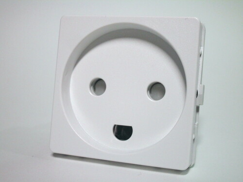 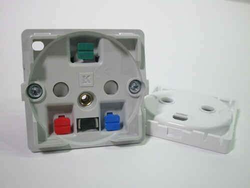 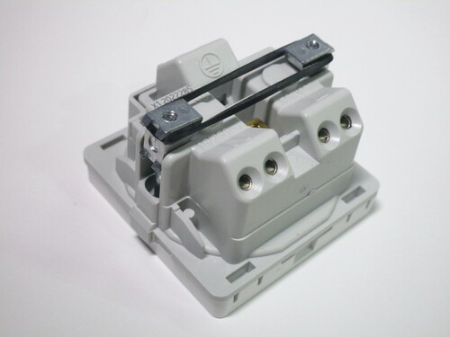{kind=link}
{kind=link}
{kind=link}
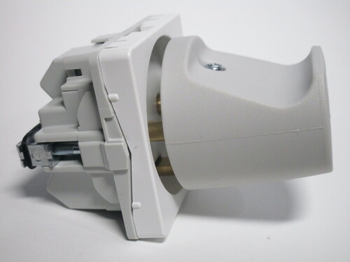 Note that not all Danish outlets do have a recess; ones without it are allowed, but they have to have a switch to turn the power off, as is common on British sockets (though that's not compulsory there). This is meant as a sort of safety feature to prevent touching the pins while they're live, though it's obviously not very effective as it's entirely possible for someone to forget to use the switch.
{kind=link}
The front of the cover unclips, revealing the mounting screws for attaching to a wall box (which, unusually, are Torx) as well as colour-coded levers for the push-in wire connections on the back (red for line, blue for neutral, green for earth).
Mounting is done similarly to older style of European wall boxes, with two arms (normally kept together with an elastic band) that push to the side of the box. However, Denmark uses different styles of wall boxes than the rest of Europe - this particular style is very small, as can be seen by the diminutive size of the socket.
Rewireable plugs
Rating: 16A 250V
Earthed Danish power plugs look quite close to CEE 7/2 non-earthed plugs, but with the previously-mentioned earth pin. This is an important difference from Schuko and French-style plugs, which instead use side contacts or a hole, but it's common on other types of plug around the world, such as the American, British and Italian ones.
However, in contrast to other plug standards, the earth pin is shorter than the L and N pins, a detail not found on any other kind of plug. The sockets do still ensure that the earth is connected first and disconnected last, but the smaller size of the pin forces them to use a contact that sticks out quite far, as can be seen in wall sockets once the faceplate is removed.
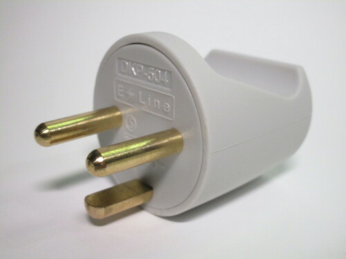 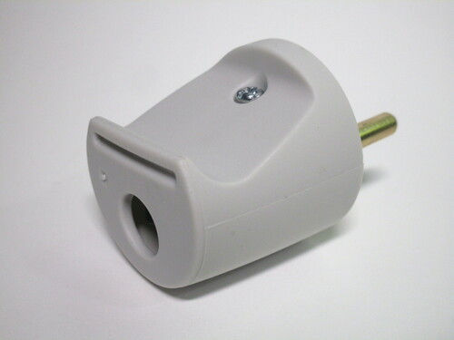 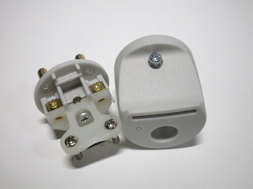{kind=link}
{kind=link}
{kind=link}
The other plug uses the same pin configuration, but with the cord coming out from the bottom. This can be quite useful in case there is furniture or the appliance itself in front of the socket. It also helps prevent people pulling on the cord to unplug it.
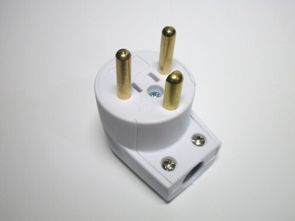 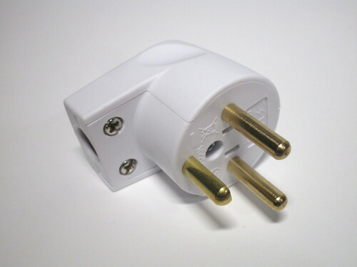 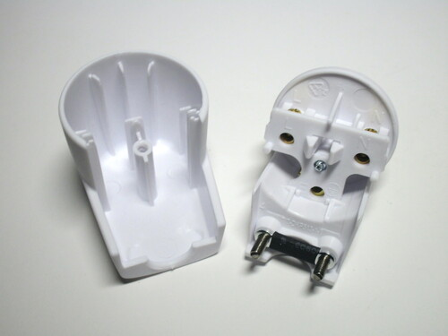{kind=link}
{kind=link}
{kind=link}
Connector socket
Rating: 16A 250V
This is a connector socket, as found on things like extension cords. Unlike the wall socket shown previously, this one has a quite deep recess, which allows for full protection against touching live parts. Additionally, the hole for the earth contact on this socket is round rather than a semicircle.
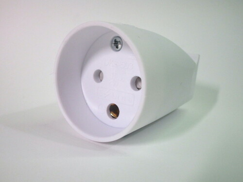 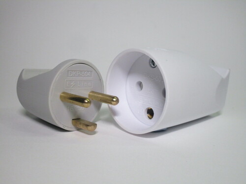{kind=link}
{kind=link}